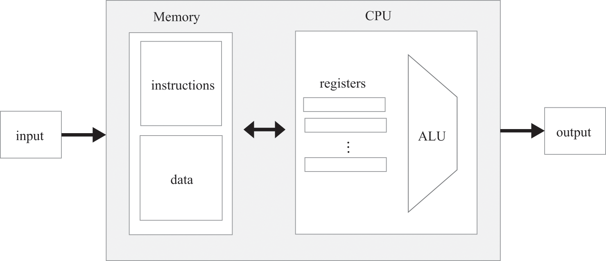
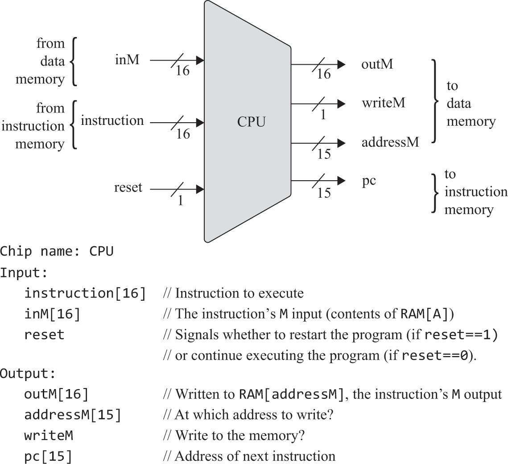
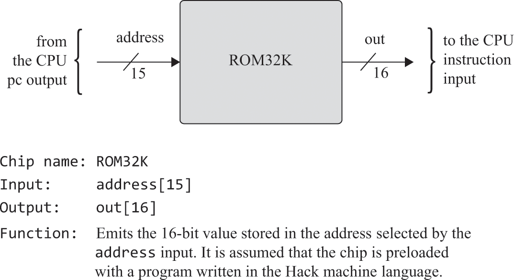
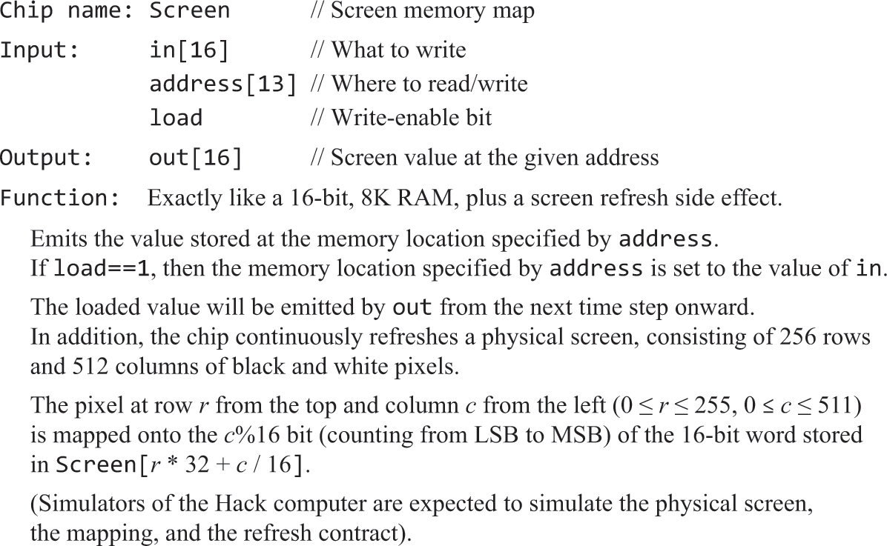
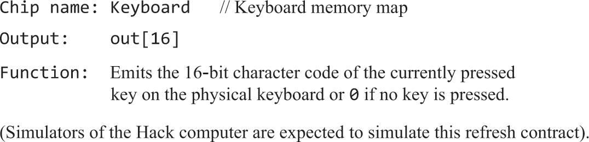
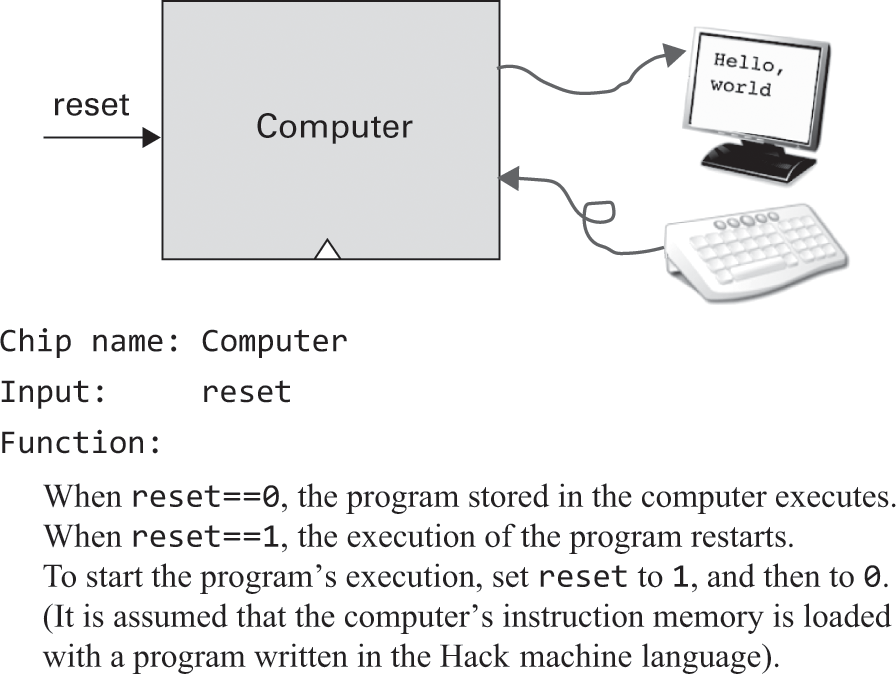
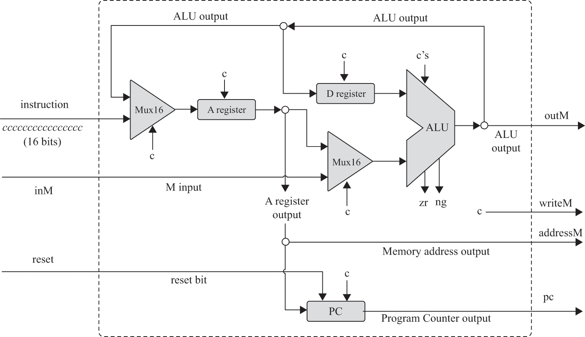
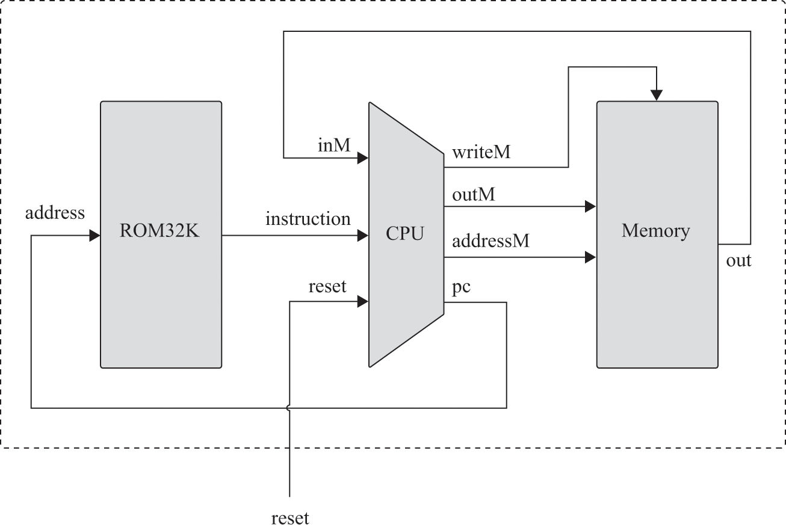

4.1 Computer Architecture
Fundamentals
Stored Program Concept
- A fixed hardware platform capable of executing a fixed set of simple instructions which exist temporarily in memory
- This means the platform can behave differently each time it is loaded with a new program
Von Neumann Architecture
- A CPU interacting with memory, receiving data from an input and emitting to some output
- Memory stores not only the manipulated data, but the instructions that tell the computer what to do

Memory
- Linear sequence of addressable, fixed size registers each having a unique address and a value
- Stores data and instructions as sequences of bits
Data Memory
- Abstractions such as variables, arrays and objects are are just binary values stored in registers
- To read a register, supply an address and probe the value of the address
- To write to a register, supply an address and store a new value in the register, overriding the previous value
Instruction Memory
- High level code must first be translated into machine code, written as binary values inside a binary or executable version of the program
CPU
- Executes instructions of the current program
- Each instruction tells the CPU which computation to perform, which registers to access and which instruction to fetch and execute next
- Achieved using Arithmetic Logic Unit, a set of registers and a control unit
ALU
- Performs low level arithmetic and logic operations
- Adds two given values, computer their bitwise AND, compare them for equality, etc
Registers:
- CPU needs to store temporary values with short distances from ALU (memory units not suitable for this reason, otherwise cause starvation)
- Include a small set of high speed registers
- Data registers to store values that are used to address the RAM
- Program counter register stores the address of the next instruction
- Instruction register stores the current instruction
Control
- Instructions need to be decoded into micro codes which are then routed to its designated hardware device, where it tells the CPU how to use to do the instruction
Input & Output
- All input devices are treated the same via memory-mapped IO
- This is basically a binary emulation of the I/O device, making it appear to the CPU as if it were regular memory segment
- For each device, a designated area in the memory has a dedicated memory map
- For example, a keyboard memory map tracks what keys are pressed in binary
- These maps are refreshed many times per second
Hack Specification
- A Von Neumann machine consisting of a CPU, two separate memory modules for instructions and data, and two memory mapped IO devices - a screen and keyboard
- CPU consists of the ALU, data, address and program counter registers
- Executes programs that reside in instruction memory
- A instructions, 16 bits of instruction are loaded into the A register
- C instructions, split into various bits that are sent to different parts of the CPU
CPU
- Executes 16 bit instructions according to hack machine language
- Consists of ALU, A and D registers, program counter
- Connects to instruction memory to fetch instructions for execution
- Connects to data memory to read and write data values
inMandoutMhold the values referred to asMin the hack syntaxaddressMholds the address at whichoutMshould be written

- A instruction
- CPU loads the 16 bit value into the A register
- C instruction
- CPU causes the ALU to perform the computation specified by instruction and stores in
A, D, Mregisters - If one of the destination registers is
M,outMis set to the ALU output, andwriteMbecomes 1 (meaning its allowed to write)
- CPU causes the ALU to perform the computation specified by instruction and stores in
- If reset == 1, then PC jumps to 0
Instruction Memory

I/O
- Access to I/O devices made possible by data memory where memory maps are stored
- When one or more bits are changed in a memory map, the change is immediately reflected in whatever medium
- Realised by built in chips called
ScreenandKeyboard
Screen
- 256 rows of 512 black and white pixels each, spanning a grid of 131,072 pixels
- Computer interfaces with the physical screen via a memory chip, meaning that it can be read and written to using a regular RAM interface
- State of any 1 of its bits is reflected by a pixel on the physical screen
1=black, 0=white

Keyboard
- Interfaces with a physical keyboard via a memory map
- Chip is a read only 16 bit register
- When a key is pressed, the 16 bit code of the character is emitted by the chip
- When no key is pressed, the chip emits 0

Data Memory
- Realised in a chip called
Memory - Package of three 16bit chip parts -
RAM16k, Screen, Keyboard
Computer
- Top most abstraction of the architecture
- Connected to Screen and Keyboard
- Has a single but input for reset

- Start up logic is essentially booting the computer
- OS kernel is loaded into the RAM and starts executing, kernel executes everything else and listens to I/O and reacts by running even more processes to execute stuff
Hack Implementation
CPU
- Needs to:
- Execute a given hack instruction
- Determine which instruction should be fetched and executed next
- Gate logic needs to decode the current instruction
- ALU computes the function specified by the instruction
- Registers to store resulting values
- Program counter to keep track of which instructions should be fetched and executed next

Instruction Decoding
- The 16bit instruction value represents an A or C instruction (starts with 0 or 1 respectively)
- A instruction - bits are interpreted as a binary value that represents an address and so is stored in the A register
- C instruction - The instruction is treated as a combination of bits
1xxaccccccdddjjj- The
aandccccccbits code thecomppart of the instruction - The
dddbits code thedestpart of the instruction - The
jjjbits code thejumppart of the instruction - The
xxbits are ignored
- The
Instruction Execution
- A instruction - 16 bits are loaded as is into the A register
- C instruction:
abit determines whether the ALU will be fed from the A register value or from the incoming M valueccccccbits determine which function the ALU will computedddbits determine which registers should accept the ALU outputjjjbits determine which instruction to fetch next
- These broken down parts are then routed into their respective chip destinations, where they instruct the chips what to do in order to partake in execution
Instruction Fetching
- CPU determines and outputs the address of the next instruction inside the program counter
- Current program is stored in instruction memory, starting at address 0
- If we wish to start (or restart), program counter should be set to 0
- Therefore, default logic of the program counter is
PC++(to go to the next instruction in memory)- For jump instructions, we say
PC=A,(since execution always branches to the instruction whose address is the current value of A) elsePC++ - We route
Aregister into the PC register to do this - Together
jjjandzr and ngbits from the ALU determine whether jump condition is needed or not
- For jump instructions, we say

Memory
- Aggregate of
RAM16k, Screen and Keyboard- Though, this is treated as a single memory space ranging from 0 to address 24576
Computer
- Can be realised using three chip parts -
CPU, Memory and ROM32K

- Fetch / Execute Cycle:
- When
resetinput = 1, the CPU'spcoutput emits 0, causing the instruction memoryROM32Kto emit the first instruction in the program - The instruction will be executed by the CPU, and this execution may involve reading and writing to a data memory register
- In the process of executing, the CPU figures out which instruction to fetch next and sends this to it's
pcoutput - The
pcoutput feeds the address input of the instruction memory, causing the latter to output the next instruction to be executed - To infinity and beyond
- When